2021年北京市中考生物试题 原卷解析
2021年北京市初中学业水平考试
生物试卷
1. 控制着生物的发育和遗传的细胞结构是（ ）
A. 细胞壁B. 细胞膜C. 细胞质D. 细胞核
【答案】D
【解析】
【分析】植物细胞的基本结构包括：细胞壁、细胞膜、细胞质、细胞核、液泡、叶绿体等结构。
【详解】A．植物细胞的不同结构功能不同。细胞壁位于细胞的最外面，起到保护和支持作用，A不符合题意。
B．细胞膜能控制物质的进出，既不让有害的物质进来，也不让有用的物质轻易出去，具有选择透过性，也有保护作用，B不符合题意。
C．活细胞的细胞质具有流动性，有利于细胞与外界环境之间进行物质交换，C不符合题意。
D．细胞核内含遗传物质，对生物的遗传具有重要的意义，D符合题意。
故选D。
【点睛】关键点：细胞核是细胞中最主要的结构。
2. 利用摄像机记录鹌鹑卵孵化过程的研究方法属于（ ）
A. 观察法B. 调查法
C. 实验法D. 文献法
【答案】A
【解析】
【分析】1．实验法是利用特定的器具和材料，通过有目的、有步骤的实验操作和观察、记录分析，发现或验证科学结论。
2．调查法是指通过一定的途径，深入实际了解特定事物以获得第一手资料并完成科技活动的方式。
3．文献法是指通过阅读、分析、整理有关文献材料，全面、正确地研究某一问题的方法。
【详解】观察法是在自然状态下，研究者按照一定的目的和计划，用自己的感官外加辅助工具，对客观事物进行系统的感知、考察和描述，以发现和验证科学结论。科学观察可以直接用肉眼，也可以借助放大镜、显微镜等仪器，或利用照相机、录像机、摄像机等工具，有时还需要测量。所以，利用摄像机记录鹌鹑卵孵化过程的研究方法属于观察法，故选A。
【点睛】此题考查对实验法、观察法、文献法、调查法的理解和应用。
3. 图所示为人的造血干细胞产生不同类型血细胞的过程，这一过程称为（ ）
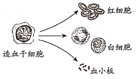
A. 细胞分裂B. 细胞分化
C. 细胞生长D. 细胞死亡
【答案】B
【解析】
【分析】细胞分裂就是一个细胞分成两个细胞的过程，细胞分裂使细胞数目增多。新分裂产生的细胞体积很小，需要不断从周围环境中吸收营养物质，并且转变成组成自身的物质，体积逐渐增大，这就是细胞的生长。细胞分化是指细胞在生长过程中细胞的形态、结构和功能发生变化的过程，细胞分化形成了不同的组织，如植物的保护组织、营养组织、分生组织和输导组织。
【详解】生物在个体发育过程中，一个或一种细胞通过分裂产生的后代，在形态、结构和生理功能上发生差异性的变化，这个过程叫做细胞分化。细胞分化产生了不同的细胞群。所以，人的造血干细胞产生不同类型血细胞的过程，称为细胞分化，故选B。
【点睛】正确识记并理解细胞分裂、细胞分化、细胞生长的含义是解题的关键。
4. 人体的肝脏属于（ ）
A. 细胞B. 组织C. 器官D. 系统
【答案】C
【解析】
【分析】动物体的结构层次为：细胞→组织→器官→系统→动物体。
【详解】A、细胞是除病毒以外，生物体结构和功能的最小单位，错误。
B、组织是细胞分化的结果，它是由形态相似，结构、功能相同的细胞联合在一起形成的一个细胞群，错误。
C、肝脏外面的膜属于结缔组织膜，内外分布着丰富的神经和血管，神经属于神经组织，血管内的血液属于结缔组织，可见肝脏是由不同的组织按照一定的次序结合在一起构成的一个器官，正确。
D、系统是由能够共同完成一种或几种生理功能的多个器官按照一定的次序组合在一起构成的，错误。
【点睛】掌握不同的结构层次的定义是本题解题关键。
5. 在植物根尖的结构中，吸收水分和无机盐的主要部位是（ ）
A. 分生区B. 伸长区C. 成熟区D. 根冠
【答案】C
【解析】
【分析】根尖是指从根的顶端到生有根毛的一段．它的结构从顶端依次是根冠、分生区、伸长区、成熟区，根尖的结构如图：
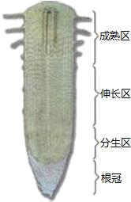
根冠位于根的顶端，属于保护组织，细胞比较大，排列不够整齐，像一顶帽子似地套在外面，具有保护作用。
分生区被根冠包围着，细胞体积小、细胞核大、细胞质浓有很强的分裂能力，能够不断分裂产生新细胞。
伸长区在分生区上部，细胞逐渐停止分裂，开始迅速伸长，是根伸长最快的地方，能够吸收水分和无机盐。
成熟区细胞停止伸长，并且开始分化，一部分向外突起形成根毛，是根吸收水分和无机盐的主要部位。成熟区及其上部，根内部一部分细胞分化形成导管，能输导水分和无机盐。
【详解】熟区也叫根毛区；在伸长区的上部，细胞停止伸长，并且开始分化，表皮细胞一部分向外突起形成根毛，是吸收水分和无机盐的主要部位。根毛的存在增加了根的吸收面积。根毛能分泌多种物质，如有机酸等，使土壤中难于溶解的盐类溶解，成为容易被植物吸收的养分。成熟区及其上部，根内部一部分细胞分化形成导管，能输导水分和无机盐。
故选：C
【点睛】解答此题的关键是知道根尖结构以及与吸收功能相适应的特点。
6. 蒸腾作用是植物体重要的生理活动之一。以下相关叙述错误的是（ ）
A. 水可以通过叶片的气孔散失到大气中
B. 蒸腾作用为水和无机盐运输提供动力
C. 蒸腾作用有助于降低叶片表面的温度
D. 植物在不同条件下蒸腾速率是相同的
【答案】D
【解析】
【分析】水分从活的植物体表面以水蒸气状态散失到大气中的过程，叫蒸腾作用。蒸腾作用的主要器官是叶。蒸腾作用的“门户”是气孔，气孔是由两个呈半月形的保卫细胞围成的空腔。其意义有：促进了根部对水分的吸收及水和无机盐在体内的运输；降低了植物体尤其是叶片表面的温度，避免被高温灼伤；提高大气湿度，增加降水。
【详解】Ａ．气孔是植物蒸腾失水的“门户”，也是气体交换的“窗口”。故水可以通过叶片的气孔散失到大气中，Ａ正确。
Ｂ．植物的蒸腾作用在把体内的水以水蒸气的形式通过叶片的气孔蒸发到大气当中去的时候，是一种“泵”的原理。它为根吸水提供了向上的拉力，同时溶解在水中的无机盐也一同被向上运输。所以，蒸腾作用促进了水和无机盐的运输，是植物向高处运输水分和无机盐的动力，Ｂ正确。
Ｃ．蒸腾作用降低了植物体尤其是叶片表面的温度，避免被高温灼伤，Ｃ正确。
Ｄ．气孔的张开和闭合可以调节蒸腾作用，使植物体内经常保持着适量的水分。而气孔的张开和闭合又受光照强度、环境温度、空气湿度、空气流动等环境因素的影响。故植物在不同条件下蒸腾速率可能不相同，Ｄ错误。
故选Ｄ。
【点睛】正确识记并理解蒸腾作用的含义和对植物的意义是解题的关键。
7. 某同学利用如图所示装置研究黑藻 光合作用。以下有关该实验的叙述错误的是（ ）
光合作用。以下有关该实验的叙述错误的是（ ）
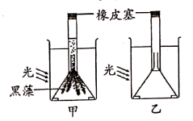
A. 本实验可以探究黑藻的光合作用是否能够产生氧气
B. 乙装置的作用是排除黑藻和光照对实验结果的影响
C. 甲装置中收集到的气体可以使带火星的小木条复燃
D. 光照强度改变会影响甲装置内单位时间气泡产生量
【答案】B
【解析】
【分析】绿色植物通过叶绿体利用光能，把二氧化碳和水转化成储存能量的有机物（如淀粉），并且释放出氧气的过程，叫做光合作用。
可见光合作用的原料是二氧化碳和水；场所是叶绿体；条件是光；产物是：有机物和氧。
【详解】Ａ．甲乙两组实验的变量是金鱼藻，故本实验可以探究黑藻的光合作用是否能够产生氧气，Ａ正确。
Ｂ．对照实验是在研究一种条件对研究对象的影响时，所进行的除了这种条件不同外，其他条件都相同的实验，这个不同的条件，就是唯一变量。一般的对实验变量进行处理的，就是实验组，没有对实验变量进行处理的就是对照组。故乙装置的作用是对照，Ｂ错误。
Ｃ．甲装置中收集到的气体是黑藻在光下进行光合作用制造的氧气。而氧气能助燃，能使带火星的小木条复燃，Ｃ正确。
Ｄ．在一定范围内，光照强度越强，光合作用越强。故光照强度改变会影响甲装置内单位时间气泡产生量，Ｄ正确。
故选Ｂ。
【点睛】正确识记并理解光合作用的过程和对照实验的设计方法是解题的关键。
8. 血管分布在全身各处，是血液流动的管道。以下关于血管的叙述错误的是（ ）
A. 动脉管壁弹性大，血液流速快
B. 静脉瓣可以防止血液倒流
C. 毛细血管壁由单层细胞构成
D. 肺动脉中的血液含氧丰富
【答案】D
【解析】
【分析】肺动脉内流动含氧较低的静脉血。这些血液流经肺部毛细血管时，与肺泡进行气体交换，肺泡里的氧气进入血液，血液中的二氧化碳进入肺泡，血液由静脉血变为动脉血。所以，肺静脉里面流含氧丰富的动脉血。
【详解】A．动脉的管壁较厚、弹性大，血流速度快，主要是将血液从心脏输送到身体各部分，A正确。
B．在我们人的四肢的静脉内表面通常具有防止血液倒流的静脉瓣，B正确。
C．毛细血管的管壁最薄，只有一层扁平上皮细胞构成，管的内径十分小，只允许红细胞单行通过。血流速度最慢，是连通于最小的动脉和静脉，便于血液与组织细胞充分地进行物质交换，C正确。
D．由分析可知：肺动脉内流动含氧较低的静脉血。当血液经过肺部的毛细血管后，肺静脉里面流含氧丰富的动脉血，D错误。
故选D。
【点睛】正确识记并理解血管的类型的特点、肺循环的意义是解题的关键。
9. 根据安全输血的原则，B型血的患者应输入（ ）
A. O型血B. A型血
C. B型血D. AB型血
【答案】C
【解析】
【分析】输血以输同型血为原则。例如：正常情况下A型人输A型血，B型血的人输B型血。
【详解】由分析可知，输血以输同型血为原则。但在紧急情况下，AB血型的人可以接受任何血型，但只能输给AB型的人，O型血可以输给任何血型的人，但只能接受O型血。如果异血型者之间输血输得太快太多，输进来的凝集素来不及稀释，红细胞可能引起凝集反应。因此，输血时应该以输入同型血为原则。在紧急情况下任何血型的人都可以输入少量的O型血。AB型的人还可以输少量的A或B型血。异血型者之间输血，只有在紧急情况下，不得已才采用。因此首先考虑的应该是输同型血，C符合题意。
故选C。
【点睛】熟知输血原则是解答本题的关键。
10. 图是肾单位结构模式图，以下相关叙述错误的是（ ）
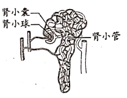
A. 肾单位是形成尿液的基本结构
B. 肾小球可滤过血浆中所有物质
C. 肾小囊中的原尿里含有葡萄糖
D. 肾小管长而弯曲有利于重吸收
【答案】B
【解析】
【分析】每个肾单位由肾小体和肾小管组成，肾小体由肾小球和肾小囊组成。肾小球是血管球，由入球小动脉分出的许多毛细血管相互缠绕而成，这些毛细血管汇集成出球小动脉。肾小囊套在肾小球的外面，下接肾小管。肾小管细长而曲折，周围缠绕着大量的毛细血管。肾小囊和肾小管组成的结构，就像一个“小漏斗”。尿的形成包括肾小球和肾小囊内壁的滤过作用，肾小管的重吸收作用两个过程。
【详解】Ａ．肾脏是形成尿液的器官。每个肾脏包括大约100万个结构和功能单位，叫做肾单位。肾单位是形成尿液的基本结构，Ａ正确。
Ｂ．当血液流经肾小球时，除血细胞和大分子的蛋白质以外，血浆中的一部分水、无机盐、葡萄糖和尿素等物质，都可以经过肾小球过滤到肾小囊中，Ｂ错误。
Ｃ．由上述分析可知：血浆中的一部分水、无机盐、葡萄糖和尿素等物质，都可以经过肾小球过滤到肾小囊中，形成原尿，Ｃ正确。
Ｄ．肾小管细长而曲折，周围缠绕着大量的毛细血管，有利于其重吸收营养物质，Ｄ正确。
故选Ｂ。
【点睛】解题的关键是识记并理解肾单位结构和功能。
11. 呼吸系统由多个器官组成，其中能与血液进行气体交换的是（ ）
A. 鼻B. 喉C. 气管D. 肺
【答案】D
【解析】
【分析】呼吸系统由呼吸道和肺组成，呼吸道包括鼻、咽、喉、气管、支气管。
【详解】呼吸道是气体进出肺的通道，能清洁、湿润、温暖吸入的气体。
肺是气体交换的场所，是呼吸系统的主要器官。
故选D。
【点睛】理解肺是气体交换的场所、是呼吸系统的主要器官才是解题关键。
12. 在听觉形成的过程中，接受刺激产生兴奋的结构位于（ ）
A. 耳廓B. 鼓膜C. 听小骨D. 耳蜗
【答案】D
【解析】
【分析】耳朵的结构：耳郭、外耳道、鼓膜、鼓室、听小骨、耳蜗、前庭、半规管等。
【详解】A．耳廓的作用是收集声波，错误。
B．鼓膜的作用是能感应由外耳道传入的声波，产生振动并牵动附着其上的听小骨链，使声波的刺激传进中耳，错误。
C．听小骨的作用是能把鼓膜的振动传给内耳，传导过程还像放大器一样，把声音信号放大数倍，所以即使很轻微的声音人们也能听到。听骨为人体中最小的骨，又称为听小骨，由锤骨、砧骨及镫骨组成，错误。
D．耳蜗的作用：耳蜗具有传音、感音、平衡功能。耳蜗位于前庭的前内方，形似蜗牛壳，为螺旋形骨管，是内耳的一部分，与前庭和半规管组成内耳又称迷路。耳蜗的蜗管内含淋巴是耳蜗的传音结构；耳蜗的螺旋器是听觉感受器，内有多种听觉感受细胞，正确。
故选D。
【点睛】掌握耳朵的结构和功能是解题关键。
13. 膝跳反射可用于检测神经系统对刺激产生反应的状况。据图分析，以下相关叙述错误的是（ ）
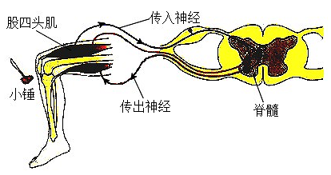
A. 该反射属于条件（复杂）反射
B. 该反射的神经中枢位于脊髓
C. 股四头肌收缩带动小腿抬起
D. 传出神经受损该反射不能完成
【答案】A
【解析】
【分析】神经调节的基本方式是反射，是指在中枢神经系统参与下，动物体或人体对内环境刺激所发生的有规律的反应。完成反射的结构基础是反射弧，通常由感受器→传入神经→神经中枢→传出神经→效应器（传出神经末梢和它所支配的肌肉或腺体）组成。反射活动需要经过完整的反射弧来实现，若反射弧中任何环节在结构或功能上受损，反射就不能完成。
【详解】A．该反射的神经中枢位于脊髓，属于非条件（简单）反射，A错误。
B．由题图可知：该反射的神经中枢位于脊髓，B正确。
C．完成反射的结构基础是反射弧，通常由感受器→传入神经→神经中枢→传出神经→效应器（传出神经末梢和它所支配的肌肉或腺体）组成。由题图可知，股四头肌是膝跳反射的效应器，故其收缩能带动小腿抬起，C正确。
D．反射的进行必须保证反射弧的完整性，若传出神经受损，人不能完成该反射，D正确。
故选A。
【点睛】正确识记并理解反射弧的组成和功能是解题的关键。
14. 下列可以促进生殖器官发育，激发并维持第二性征的激素是（ ）
A. 胰岛素B. 性激素
C. 生长激素D. 甲状腺激素
【答案】B
【解析】
【分析】性激素是指由动物体的性腺，以及胎盘、肾上腺皮质网状带等组织合成的甾体激素，具有促进性器官成熟、第二性征发育及维持性功能等作用。雌性动物卵巢主要分泌两种性激素——雌激素与孕激素，雄性动物睾丸主要分泌以睾酮为主的雄激素。性激素的化学本质是脂质。
【详解】Ａ．胰岛素的主要功能是调节糖在体内的吸收、利用和转化等，如促进血糖合成糖元，加速血糖的分解，从而降低血糖的浓度，使血糖维持在正常水平，Ａ错误。
Ｂ．由分析可知：性激素具有促进性器官成熟、第二性征发育及维持性功能等作用，Ｂ正确。
Ｃ．垂体分泌的生长激素（蛋白质类物质），作用于全身细胞，具有促进生长，促进蛋白质合成和骨生长的作用，Ｃ错误。
Ｄ．甲状腺分泌的甲状腺激素（氨基酸衍生物），几乎作用于全身组织细胞，具有促进代谢活动；促进生长发育（包括中枢神经系统的发育），提高神经系统的兴奋性的作用，Ｄ错误。
故选Ｂ。
【点睛】解题的关键是识记并理解常见激素及其主要作用。
15. 运动不当容易引起关节软骨损伤，损伤部位是图中的（ ）
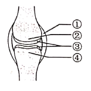
A. ①B. ②C. ③D. ④
【答案】C
【解析】
【分析】题图中：①是关节囊，②是关节头，③是关节软骨，④是关节窝。
【详解】关节由两块或两块以上的骨构成，基本结构有关节面、关节囊和关节腔。关节面是组成关节的相邻两骨的接触面，一凸一凹，表面覆有一层关节软骨，有减少摩擦和缓冲撞压的作用。关节囊是附着在关节面周围及其附近骨面上的结缔组织囊，关节囊围成的密闭空腔叫关节腔，内有少量滑液。除了这些基本结构，有的关节还有韧带等辅助结构。所以，运动不当容易引起关节软骨损伤，损伤的部位是图中的③，故选C。
【点睛】正确识记并理解关节的结构和功能是解题的关键。
16. 胎儿与母体进行物质交换的结构是 （ ）
A. 输卵管B. 子宫C. 胎盘D. 卵巢
【答案】C
【解析】
【分析】胎盘是胎儿与母体之间进行物质交换的器官；脐带(胎儿通过脐带与胎盘相连)是胎儿与母体之间运输物质的通道；从形成受精卵开始到第38周时，胎儿就发育成熟，从母体产出。
【详解】A.输卵管是输送卵子和受精的场所，不是胎儿与母体进行物质交换的结构，A不符合题意。
B.子宫是胎儿发育成熟的场所，也不是与母体进行物质交换的结构，B不符合题意。
C.胎盘是胎儿与母体之间进行物质交换的器官，故C符合题意。
D.卵巢是产生卵细胞和分泌雌性激素的器官，故D不符合题意。
【点睛】熟悉生殖系统具体结构，并理解它们的功能才能掌握这部分内容。
17. 小林同学用带有芽眼的马铃薯块茎繁育出新植株。下列繁殖方式与此不同的是（ ）
A. 利用番茄种子进行繁殖
B. 扦插月季的茎进行繁殖
C. 蟹爪兰嫁接到仙人掌上
D. 草莓匍匐茎上长出幼苗
【答案】A
【解析】
【分析】有性生殖是指：通过两性生殖细胞(精子和卵细胞)的结合形成的受精卵发育成新个体的生殖方式。如利用种子繁殖后代。
无性生殖是指：不经过两性生殖细胞的结合，由母体直接产生新个体的生殖方式。如植物的扦插、嫁接、组织培养等。
【详解】A．用带有芽眼的马铃薯块茎繁育出新植株，属于无性生殖。而利用番茄种子进行繁殖，属于有性生殖，A符合题意。
B．扦插月季的茎进行繁殖，属于无性生殖，B不符合题意。
C．蟹爪兰嫁接到仙人掌上，属于无性生殖，C不符合题意。
D．草莓匍匐茎上长出幼苗，属于无性生殖，D不符合题意。
故选A。
【点睛】正确识记并理解有性生殖和无性生殖的区别是解题的关键。
18. 考古学家在三星堆遗址发现了古象牙，通过将象牙中残存的DNA与现有象群DNA进行比较，可以推测两者的亲缘关系。下列相关叙述错误的是（ ）
A. 通过一定技术手段可估测古象生存年代
B. 所发现的古象牙能为生物进化提供证据
C. 古象牙中残存的DNA携带了遗传信息
D. 两者的DNA差异越小，亲缘关系越远
【答案】D
【解析】
【分析】化石（生物的遗体、遗物或生活痕迹，由于某种原因被埋藏在地层中，经过若干万年的复杂变化形成）是生物进化最直接和最有力的证据，但不是唯一的证据。一般而言，在越古老的地层中，形成化石的生物越低等，越浅的地层中，形成化石的生物越高等。
【详解】AB．化石是研究生物进化最重要的、比较全面的证据，化石是由古代生物的遗体、遗物或生活痕迹等，由于某种原因被埋藏在地层中，经过漫长的年代和复杂的变化而形成的，因此通过一定技术手段可估测古象生存年代，所发现的古象牙能为生物进化提供证据，AB正确。
C．DNA是生物体的主要遗传物质，携带遗传信息，C正确。
D．两者的DNA差异越小，亲缘关系越近，D错误。
故选D。
【点睛】解答此题的关键是掌握化石的特点。
19. 下列关于正常男性染色体的叙述错误的是（ ）
A. 体细胞中有1对性染色体
B. 体细胞中Y染色体一定来自父亲
C. 精子中一定不含X染色体
D. 精子染色体数目为体细胞一半
【答案】C
【解析】
【分析】男女染色体的差别
①常染色体：与性别决定无关的染色体，人共22对常染色体。
②性染色体：与性别决定有关的染色体。人有一对性染色体，男性为XY、女性为XX。
③男性体细胞中的染色体为：22对常染色体+1对性染色体（XY），产生的精子（生殖细胞）有两种：22条＋X或22条＋Y。
④女性体细胞中的染色体为：22对常染色体+1对性染色体（XX），产生的卵细胞（生殖细胞）只有一种：22条＋X。
【详解】A．男性体细胞中有1对性染色体是XY，A正确。
B．男性体细胞中Y染色体一定来自父亲，X染色体来自母亲，B正确。
C．男性产生的精子有两种：22条＋X或22条＋Y。故精子中可能含X染色体，C错误。
D．在形成精子的细胞分裂过程中，染色体要减少一半，而且不是任意的一半，是每对染色体中的一条分别进入不同的精子中。故精子的染色体是体细胞的一半，D正确。
故选C。
【点睛】正确识记并理解人类染色体的组成是解题的关键。
20. 豹猫是一种哺乳动物，近年来相继在北京松山和野鸭湖地区被监测发现。豹猫的下列行为中属于学习行为的是（ ）
A. 习惯昼伏夜出，活动比较隐蔽
B. 经过多次试探后不再害怕监测设备
C. 幼崽一出生就会吮吸乳汁
D. 通常在每年的春夏两季进行繁殖
【答案】B
【解析】
【分析】1．先天性行为是动物生来就有的，由动物体内的遗传物质所决定的行为，又称为本能，如蜜蜂采蜜、蜘蛛结网、亲鸟育雏等。
2．学习行为是在遗传因素的基础上，通过环境因素的作用，由生活经验和学习而获得的行为，如鹦鹉学舌、海豹表演、小狗钻火圈等。
【详解】结合分析可知：“习惯昼伏夜出，活动比较隐蔽”、“幼崽一出生就会吮吸乳汁”、“通常在每年的春夏两季进行繁殖”都是由豹猫的遗传物质所决定的行为，属于先天性行为；而“经过多次试探后不再害怕监测设备”，是豹猫在遗传因素的基础上，通过环境因素的作用，由生活经验和学习而获得的行为，属于学习行为，故选Ｂ。
【点睛】正确识记并理解先天性行为和学习行为的区别是解题的关键。
21. 贯众具有药用价值，它有真正的根、茎、叶，用孢子繁殖。初步判断贯众属于（ ）
A. 苔藓植物B. 蕨类植物
C. 裸子植物D. 被子植物
【答案】B
【解析】
【分析】１．植物根据生殖细胞的不同可分为孢子植物和种子植物。孢子植物用孢子来繁殖后代，包括藻类植物、苔藓植物和蕨类植物，种子植物用种子来繁殖后代，包括裸子植物和被子植物。种子植物又包括裸子植物和被子植物。
２．藻类植物的结构简单，无根、茎、叶的分化，更无输导组织；苔藓植物生活在阴湿的环境中，没有真正的根，因此无法支持很高的地上部分，虽然有了茎和叶，但茎、叶内无输导组织，不能为植株输送大量的营养物质供其利用，所以苔藓植物比较矮小；蕨类植物也生活在阴湿的环境中，有了根、茎、叶的分化，根能吸收大量的水和无机盐，并且体内有输导组织，能为植株输送大量的营养物质供植物生长利用，也有了机械组织，能支撑地上部分，因此蕨类植物一般长的比较高大。裸子植物和被子植物都属于种子植物，体内有输导组织，是较高等的植物类群。
【详解】贯众是鳞毛蕨科，属多年生蕨类植物。植株高25～50厘米，叶簇生，禾秆色，叶片矩圆披针形，先端钝。孢子囊群遍布羽片背面；囊群盖圆形、盾状。结合分析可知，贯众属于蕨类植物，故选Ｂ。
【点睛】正确识记并理解植物类群及其主要特征是解题的关键。
22. 2021年2月，新版《国家重点保护野生动物名录》颁布，下列四种都是此次新增或提升保护级别的动物，其中属于爬行动物的是（ ）
A.
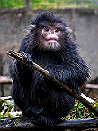
怒江金丝猴B. 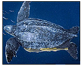
棱皮龟C. 猎隼D. 君主绢蝶
【答案】B
【解析】
【分析】爬行动物的主要特征是：体表覆盖坚韧的鳞片或甲，用肺呼吸，在陆地上产卵，卵表面有坚韧的卵壳。
【详解】A．怒江金丝猴具有胎生哺乳的特征，属于哺乳动物，A不符合题意。
B．棱皮龟体表覆盖坚韧的甲，用肺呼吸，在陆地上产卵，卵表面有坚韧的卵壳，属于爬行动物，B符合题意。
C．猎隼体表被覆羽毛，前肢变成翼，利于飞行；有气囊，辅助肺完成双重呼吸，能为猎隼的飞行提供充足的氧气，属于鸟类，C不符合题意。
D．蝴蝶的身体可分为头、胸、腹三部分，两对翅膀三对足，身体外有外骨骼等，属于节肢动物，D不符合题意。
故选B。
【点睛】解此题的关键是熟记动物的各类群以及特点。
23. 水果常用保鲜膜包好后放在冷藏室中低温保存，下列相关解释不合理的是（ ）
A. 低温抑制水果表面微生物快速繁殖
B. 保鲜膜可以减少水果中水分散失
C. 低温条件下水果中有机物消耗增加
D. 保鲜膜在一定程度上隔离微生物
【答案】C
【解析】
【分析】细菌和真菌的生存条件：①水；②适宜的温度；③营养物质；④氧（有的不需要）；⑤生存空间等。
【详解】A．微生物的繁殖需要适宜的温度，而低温能抑制水果表面微生物快速繁殖，A正确。
B．保鲜膜不透水，包裹好水果后，可以减少水果中水分散失，B正确。
C．温度影响细胞呼吸作用强度。低温条件下水果中细胞的呼吸作用减弱，有机物消耗减少，C错误。
D．保鲜膜物理特性柔软、致密，具有在一定程度上隔离微生物的作用，D正确。
故选C。
【点睛】正确识记并理解食物的保存原理是解题的关键。
24. 研究人员从一种海鱼中获得抗冻蛋白基因，将其转入到番茄细胞中，获得了抗冻的番茄品种。该过程主要应用了（ ）
A. 克隆技术B. 杂交技术
C. 转基因技术D. 发酵技术
【答案】C
【解析】
【分析】1.克隆技术的基本过程是先将含有遗传物质的供体细胞的核移植到去除了细胞核的卵细胞中，利用微电流刺激等使两者融合为一体，然后促使这一新细胞分裂繁殖发育成胚胎，当胚胎发育到一定程度后（罗斯林研究所克隆羊采用的时间约为6天）再被植入动物子宫中使动物怀孕使可产下与提供细胞核者基因相同的动物。
2.杂交技术将两个或多个品种的优良性状通过交配集中在一起，再经过选择和培育，获得新品种的方法，叫作杂交技术。
3.转基因技术：把一种生物的某个基因，用生物技术的方法转入到另一种生物的基因组中，培育出的转基因生物，就有可能表现出转入基因所控制的性状，这种技术就叫转基因技术。
4.发酵技术是指人们利用微生物的发酵作用，运用一些技术手段控制发酵过程，大规模生产发酵产品的技术，称为发酵技术。
【详解】研究人员从一种海鱼中获得抗冻蛋白基因，将其转入到番茄细胞中，获得了抗冻的番茄品种。科学家把海鱼的抗冻蛋白基因转入番茄细胞，番茄获得了抗冻的性状。这是利用了转基因技术得到了转基因番茄。
故选C。
【点睛】重点是掌握转基因技术的涵义。
25. 北京市发布“我要碳中和”微信小程序，市民可随时记录自己的“碳足迹”。以下行为不利于减少碳排放的是（ ）
A. 经常使用一次性餐具B. 节约生活用水
C. 夏季空调温度调高1℃D. 进行垃圾分类
【答案】A
【解析】
【分析】我们要做到节能减排，就要从小事做起，人人动起手来，创建美好的家园。以下几点为可行的建议：①节约电能，要注意随手关灯，不用电器时要切断或关掉电源。②节约水资源，许多废水都可以循环使用。洗手、洗菜、洗澡的水都可以收集起来冲厕所、浇花。③节约用纸。纸张的循环再利用，可以避免从垃圾填埋地释放出来的沼气，还能少砍伐树木。节约用纸就是保护森林资源，保护环境。④减少废气排放。交通废气和工业废气是生活废气的主要来源。我们出门尽量乘坐公共汽车或出租车，还可以骑自行车，尽量少乘坐私家车。⑤植物可以吸收二氧化碳，然后释放出氧气，所以我们要大量的种树，尤其是在公路旁。⑥垃圾分类处理。垃圾分类可以回收宝贵的资源，同时减少填埋和焚烧垃圾所消耗的能源。
【详解】结合分析可知：B．节约生活用水、C．夏季空调温度调高1℃、D．进行垃圾分类都是节能减排、利于减少碳排放的良好行为。而使用一次性筷子、杯子等餐具，会造成木材和纸张的浪费，不值得提倡，故选A。
【点睛】解题的关键是识记并理解节能减排、低碳生活的具体做法。
26. 小林跟随老师来到宁夏，对“宁夏之宝”——枸杞展开了研究性学习。
（1）小林根据观察，做了如下记录。
枸杞花和果实的观察记录单 ★整体观察 ·花：花瓣呈淡紫色、有淡淡的香气。 ·果实：红色、口感微甜。 ★局部观察 ·去除部分花萼、花瓣后，可见花蕊。 ·雄蕊包括花丝和花药。 ·雌蕊下部膨大，纵剖后用放大镜观察内部结构，并与果实结构对比，绘制简图。 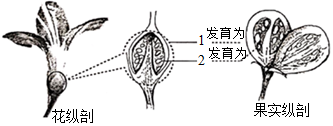 |
根据观察记录分析：
①枸杞可以通过_________协助传粉。
②枸杞果实中的甜味物质主要储存于细胞质内的______（填结构名称）中。
③雌蕊下部膨大的部分是[1]______，内部有若干[2]胚珠，胚珠将会发育为______。
（2）宁夏的部分地区土地盐碱化。小林对枸杞种子耐盐性进行初步实验研究，结果如图。据图可知，在盐浓度为______%条件下，枸杞种子的萌发率高于清水，可以说明枸杞种子适应一定的盐环境；但是______，说明其适应能力是有限的。
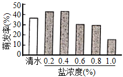
【答案】 ①. 昆虫 ②. 液泡 ③. 子房 ④. 种子 ⑤. 0．2和0．4 ⑥. 随着盐浓度升高，种子萌发率降低，并低于清水
【解析】
【分析】传粉分异花传粉和自花传粉两种，异花传粉植物的传粉需要一定的媒介做动力，依靠昆虫传粉的植物叫虫媒植物，依靠风力传播花粉的植物叫风媒植物。
生物能够适应一定的环境也能影响环境。
【详解】（1）①花粉从花药里散落出来落在雌蕊的柱头上的过程，叫做传粉，传粉分异花传粉和自花传粉两种，异花传粉植物的传粉需要一定的媒介做动力，依靠昆虫传粉的植物叫虫媒植物，依靠风力传播花粉的植物叫风媒植物。枸杞的花瓣呈淡紫色、有淡淡的香气，可以吸引昆虫。因此，枸杞可以通过昆虫协助传粉。
②液泡中含有细胞液，有各种味道的物质以及营养物质，如各种蔬果汁中含各种有味道的物质以及丰富的营养物质，就是来自于细胞中液泡的细胞液。因此，枸杞果实中的甜味物质主要储存于细胞质内的液泡中。
③雌蕊中有子房和胚珠，子房是雌蕊基部膨大的部分，传粉受精完成以后，子房发育成果实，子房壁发育成果皮，胚珠发育成种子，珠被发育成种皮，受精卵发育成胚，受精极核发育成胚乳。因此，雌蕊下部膨大的部分是[1]子房，内部有若干[2]胚珠，胚珠将会发育为种子。
（2）从图中可以看出在盐浓度为0．2和0．4时枸杞种子的萌发率分别为41%、42%，明显高于清水的萌发率38%，说明枸杞种子适应一定的盐环境；但是当盐浓度0.6时萌发率为30%；0.8时萌发率为29%；1.0时萌发率为15%，随着盐浓度升高，种子萌发率降低，并低于清水，说明其适应能力是有限的。
【点睛】解答此题的关键是知道传粉的类型、液泡的作用、生物能够适应一定的环境也能影响环境。
27. 随着生活水平提高，很多中老年人愿意搭配食用多种谷物，保证健康饮食。
（1）研究者用红豆、薏米等多种谷物配制成杂粮粉，并对比每100g杂粮粉和小麦粉玉米面中的主要营养成分及含量，得到下表。比较表中数据，杂粮粉具有蛋白质、钙和______含量高，低脂肪和低糖的特点，符合中老年人的健康需求。
| 蛋白质（g） | 糖类（g） | 脂肪（g） | 钙（mg） | 膳食纤维（g） |
小麦粉 | 9．9 | 74．6 | 1．8 | 38 | 0．6 |
玉米面 | 12．4 | 66．7 | 4．6 | 120 | 1．5 |
杂粮粉 | 27．9 | 54．7 | 1．4 | 386 | 6．2 |
（2）人体摄入杂粮粉后，其中的蛋白质在图中______（填序号）内开始消化，随后进入小肠，小肠内含有多种______，是人体主要的消化场所。蛋白质最终在小肠内被分解为______。
（3）钙不需要经过消化，可直接被吸收进入______。经检测，杂粮粉中的蛋白质和钙的吸收率均高于小麦粉和玉米面。
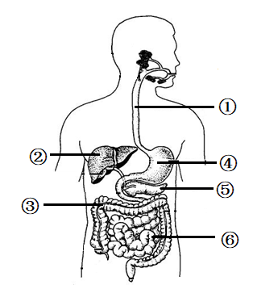
（4）有人提出“中老年人可以完全用杂粮粉替代米面作为主食”，你认为这一提法是否合理，并阐述理由：_______。
【答案】 ①. 膳食纤维 ②. ④ ③. 消化液（或“消化酶”） ④. 氨基酸 ⑤. 血液（或“毛细血管”） ⑥. 不合理，长期食用可能出现营养失衡
合理，蛋白质和钙吸收率较高，适合吸收功能不好的中老年人
【解析】
【分析】（1）营养物质的消化
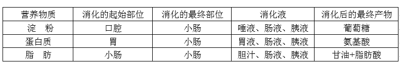
（2）吸收的概念：营养物质通过消化道壁进入血液的过程，叫吸收。
（3）小肠既是主要的消化器官，也是主要的吸收器官。长约5～6米 （利于消化和吸收）；内表面有许多皱襞和小肠绒毛，增加了内表面积；小肠腔中含有各种消化液，内含多种消化酶；小肠绒毛壁很薄，只有一层上皮细胞构成，内含丰富的毛细血管。
（4）①食道，②肝脏，③大肠，④胃，⑤胰腺，⑥小肠。
【详解】（1）从表格中可以看出杂粮粉中蛋白质、钙、膳食纤维的含量均高于玉米面和小麦粉，并且糖和脂肪的含量均较低。
（2）蛋白质的消化是从胃开始的，当食物中的蛋白质进入胃以后，在胃液的作用下进行初步消化后进入小肠，小肠里的胰液和肠液含有消化蛋白质的酶，在这些酶的作用下，蛋白质被彻底消化为氨基酸；小肠是消化和吸收的主要场所，因为小肠具有以下特点：小肠长6米左右，内表面有皱襞和小肠绒毛，加大了消化和吸收的面积；小肠中含有多种消化液，能够消化多种食物；小肠绒毛壁、绒毛内的毛细血管壁都很薄，只有一层上皮细胞构成，有利于吸收营养物质。
（3）食物所含的营养物质中，水、无机盐、维生素是小分子的物质能够直接被人体消化道壁吸收进入血液，因此钙不需要经过消化，可直接被吸收进入血液。
（4）不合理，长期食用可能出现营养失衡；合理，蛋白质和钙吸收率较高，适合吸收功能不好的中老年人。
【点睛】解答此题的关键是掌握营养物质的消化与吸收、消化系统的组成及各器官的功能。
28. 西瓜果实成熟后期可能出现开裂现象，科研人员对此开展研究。
（1）西瓜的抗裂与易裂是一对_______。科研人员将抗裂和易裂西瓜进行杂交，子一代全部为抗裂西瓜，表明_______为隐性性状。西瓜的开裂是由一对基因控制的（用A、a表示），则子一代抗裂个体的基因组成为_______。
（2）用_______观察两种西瓜果皮的切片，视野如下图。与抗裂西瓜相比，易裂西瓜的果皮细胞体积大，细胞层数_______该结构特点可能是其易裂的原因之一。
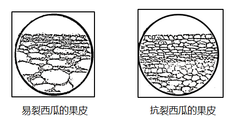
（3）在种植抗裂西瓜过程中，若在果实成熟后期大量浇水，也容易开裂，这说明生物的性状也受_______的影响。
【答案】 ①. 相对性状 ②. 易裂 ③. Aa ④. 显微镜 ⑤. 少 ⑥. 环境
【解析】
【分析】（1）生物的性状由基因控制，基因有显性和隐性之分；当细胞内控制某种性状的一对基因都是显性或一个是显性、一个是隐性时，生物体表现出显性基因控制的性状；当控制某种性状的基因都是隐性时，隐性基因控制的性状才会表现出来。
（2）在一对相对性状的遗传过程中，子代个体中出现了亲代没有的性状，新出现的性状一定是隐性性状，亲代的性状是显性性状，亲代的基因组成是杂合体。
（3）性状是指生物体所表现出的形态结构特征、生理特性和行为方式，是生物体所有特征的总和。相对性状是指同种生物同一性状的不同表现形式。
【详解】西瓜的抗裂与易裂是同种生物的同一性状的不同表现，属于相对性状。科研人员将抗裂和易裂西瓜进行杂交，子一代全部为抗裂西瓜，可知，抗裂为显性性状，易裂为隐性性状。若A基因控制显性性状、a基因控制隐性性状，则亲代抗裂西瓜的基因组成为AA，易裂西瓜的基因组成为aa，子一代抗裂个体的基因分别来自双亲，故子一代抗裂西瓜的基因组成为Aa。
（2）用显微镜观察两种西瓜果皮的切片，视野如下图。与抗裂西瓜相比，易裂西瓜的果皮细胞体积大，细胞层数少，该结构特点可能是其易裂的原因之一。
（3）生物的性状是由成对的基因控制的，成对的基因往往有显性和隐性之分。生物的性状受基因的控制，也受环境控制。所以在种植抗裂西瓜过程中，若在果实成熟后期大量浇水，也容易开裂，这说明生物的性状也受环境的影响。
【点睛】解题的关键是掌握相对性状的概念以及基因的现显性和隐性。
29. 林间草地放养鸡是一种重要“林-草-鸡”生态发展模式，可获得良好的生态效益和经济效益。
（1）草是该生态系统中的生产者，可将_______能转化为化学能，供给该生态系统中各种生物的生命活动所需。
（2）鸡可以取食草，也可捕捉食草昆虫，鸡和食草昆虫之间包括_______两种关系。请据此写出一条食物链：_______。
（3）鸡粪能够被_______分解为无机物回到环境中，提高土壤肥力，促进了该生态系统的物质_______，体现了生态效益。
（4）与林间清耕（无草）放养鸡相比，林间草地放养鸡的增重速度快、饲料投喂量_______，饲养成本低，体现出该发展模式具有较高的经济效益。
【答案】 ①. 光（或“太阳”） ②. 捕食和竞争 ③. 草→食草昆虫→鸡（或“草→鸡”） ④. 分解者 ⑤. 循环 ⑥. 少
【解析】
【分析】1．生态系统包括生物成分和非生物成分，生物成分包括生产者(绿色植物)、消费者(动物)和分解者(细菌、真菌)。
2．食物链反映的是生产者与消费者之间吃与被吃的关系，所以食物链中不应该出现分解者和非生物部分。食物链的正确写法是：生产者→初级消费者→次级消费者。注意起始点是生产者。
【详解】（1）草是绿色植物，能进行光合作用，把无机物合成有机物，光能转化为化学能。
（2）从题意可知，鸡和食草昆虫都吃草，鸡也吃食草昆虫，说明鸡和食草昆虫之间包括竞争和捕食关系；包含的食物链为：草→食草昆虫→鸡（或“草→鸡”）。
（3）生态系统中的分解者能够分解动植物尸体和粪便中的有机物，转化成无机物，供绿色植物再利用，因此鸡粪能够被分解者分解为无机物回到环境中，提高土壤肥力，促进了该生态系统的物质循环，体现了生态效益。
【点睛】解答此题的关键掌握生态系统的组成、食物链的书写、分解者的作用。
30. 走近大自然，享受户外生活的同时，也需要防范硬蜱等生物叮咬。硬蜱属于节肢动物，能携带多种致病微生物，可通过叮咬人或动物传播多种疾病。
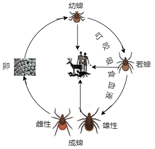
（1）在图1所示的生命周期中，除______阶段外，硬蜱都可叮咬吸食血液。
（2）硬蜱具有下列特点，其中有利于叮咬吸血的是______（多选）。
a．分泌粘液便于吸附
b．身体和附肢都分节
c．能分泌有麻痹作用的毒素
（3）硬蜱传播的疾病之一是莱姆病，这是由某种螺旋体（致病微生物）引起的，传染病，其病程及症状如图2。
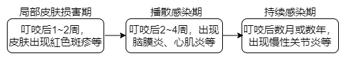
①这种螺旋体是引发莱姆病的______（填“传染源”或“病原体”）。
②硬蜱多生活在森林、灌丛、草地等环境。若身体局部皮肤出现______症状，且1~2周前在上述环境中逗留过，则应及时就医筛查，以免延误治疗。
③在一定的发病阶段，通过医学检测发现感染者体内可以产生少量相应抗体，这属于______免疫。
（4）对于传染病，预防很重要。请写出一条预防硬蜱传播的传染病的做法：______。
【答案】 ①. 卵 ②. a、c ③. 病原体 ④. 红色斑疹 ⑤. 特异性 ⑥. 谨慎进入森林、灌丛、草地等硬蜱生存环境；做好个人防护，如涂抹驱虫药物
【解析】
【分析】传染病是由病原体引起的，能在生物之间传播的疾病。传染病一般有传染源、传播途径和易感人群这三个基本环节，具有传染性和流行性。传染源指的是能够散播病原体的人和动物，传染源只能是人或者动物。传播途径指的是病原体离开传染源到达健康人所经过的途径。病原体指能引起疾病的微生物和寄生虫的统称。对某种传染病缺乏免疫力的而容易感染该病的人群是易感人群。
【详解】（1）从图1所示的生命周期中可知，除卵阶段外，硬蜱都可叮咬吸食血液。
（2）硬蜱分泌粘液便于吸附；能分泌有麻痹作用的毒素，不易被发现，这些特点都有利于叮咬吸血。
故选ac
（3）①引起传染病的细菌、病毒和寄生虫等生物称为病原体。莱姆病是由某种螺旋体（致病微生物）引起的传染病，这种螺旋体是引发莱姆病的病原体。
②硬蜱多生活在森林、灌丛、草地等环境。若身体局部皮肤出现红色斑疹症状，且1~2周前在上述环境中逗留过，则应及时就医筛查，以免延误治疗。
③在一定的发病阶段，通过医学检测发现感染者体内可以产生少量相应抗体，接种过疫苗的儿童在抗原刺激下体内会产生相应的抗体，这种免疫功能是后天获得的，只对某一种特定的病原体起作用，属于特异性免疫。
（4）硬蜱多生活在森林、灌丛、草地等环境，因此，预防硬蜱传播的传染病的做法；少去森林、灌丛、草地等硬蜱生存环境；做好个人防护等。
【点睛】本题综合考查节肢动物的特点、传染病的预防措施、抗体和抗原以及人体特异性免疫和非特异性免疫等，涉及面广，逐一分析解答，掌握扎实的基础知识才能灵活答题。
31. 在甜椒的农业生产中，通常采取沟灌的方式进行灌溉，但该方式耗水量大。为寻求更好的灌溉方式，科研人员进行了如下研究。
（1）选取相同面积的三块样地，将生长状况一致的等量甜椒幼苗种植至各样地中，每个样地幼苗数量不宜过少，目的是______。
（2）按图1所示分别对三块样地进行灌溉，使各样地土壤含水量基本保持一致。幼苗生长中还要保证各样地的______等条件相同且适宜。
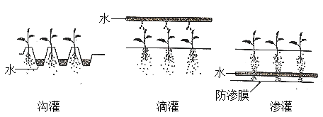
（3）分别测定三块样地甜椒生产的相关指标，结果如图2和表所示。
灌溉方式 | 灌水总量 （m3/hm2） | 甜椒产量 （kg/hm2） |
沟灌 | 2813．6 | 27522．7 |
滴灌 | 2407．2 | 33548．7 |
渗灌 | 2276．3 | 36561．7 |
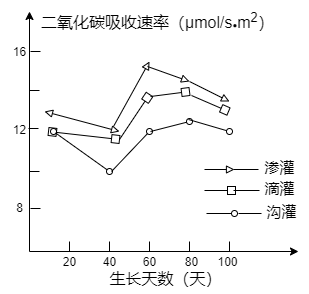
①甜椒根系吸收的水分通过______组织运输到叶片，可作为原料参与光合作用。
②图2中，通过测定______来反映光合速率。据表可知，甜椒产量最高的灌溉方式是渗灌，推测原因是：由于渗灌的给水位置在土壤深层，能______根系向下生长，进而促进叶的生长，光合作用合成的______最多，因此产量最高。
③为了验证上述推测，可以进一步测定三种灌溉方式下甜椒的______等指标，并进行比较。
（4）综合以上信息分析，渗灌可作为甜椒生产上既能增产又能______的灌溉方式。
【答案】 ①. 避免偶然因素的影响，减小误差 ②. 光照 ③. 输导 ④. 二氧化碳吸收速率 ⑤. 促进 ⑥. 有机物 ⑦. 叶片面积 ⑧. 节水
【解析】
【分析】（1）对照实验：在探究某种条件对研究对象的影响时，对研究对象进行的除了该条件不同以外，其他条件都相同的实验。根据变量设置一组对照实验，使实验结果具有说服力。一般来说，对实验变量进行处理的，就是实验组。没有处理是的就是对照组。
（2）绿色植物的光合作用是在叶绿体里利用光能把二氧化碳和水合成有机物，释放氧气，同时把光能转变成化学能储存在合成的有机物中的过程。
【详解】（1）选取相同面积的三块样地，将生长状况一致的等量甜椒幼苗种植至各样地中，每个样地幼苗数量不宜过少，目的是避免偶然因素的影响，减小误差。
（2）按图1所示分别对三块样地进行灌溉，使各样地土壤含水量基本保持一致。幼苗生长中还要保证各样地的光照、温度等条件相同且适宜。
（3）①根吸收水分和无机盐的主要部位是成熟区，根内部一部分细胞分化形成导管，能输导水分和无机盐。甜椒根系吸收的水分通过输导组织运输到叶片，可作为原料参与光合作用。
②图2中，通过测定二氧化碳吸收速率来反映光合速率。据表可知，甜椒产量最高的灌溉方式是渗灌，推测原因是：由于渗灌的给水位置在土壤深层，根生长具有向地性和向水性，能促进根系向下生长，进而促进叶的生长，光合作用合成的有机物最多，因此产量最高。
③为了验证上述推测，可以进一步测定三种灌溉方式下甜椒的叶片面积、主茎周长等指标，并进行比较。
（4）综合以上信息分析，渗灌可作为甜椒生产上既能增产又能节水的灌溉方式。
【点睛】解此题要求掌握光合作用相关知识和对照试验设置的基本要求，同时要求掌握一定的读图能力。
32. 阅读科普短文，回答问题。
心脏骤停威胁人的生命，室颤是其中的一个诱因。室颤是指心室壁的心肌快速而微弱的收缩或不协调的快速颤动。及时除颤对挽救生命极其重要，除颤越早，救助成功率越高，所以有急救“黄金四分钟”的说法。
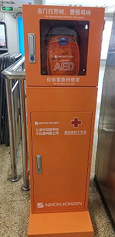
现实情况下，专业急救人员很难在4分钟内赶到现场，此刻我们可作为临时急救人员，实施紧急救助。在一些城市的地铁车站、大型商场等人员密集的场所设有自动体外除颤仪（AED）。如果能正确使用AED并结合心肺复苏术（包括胸外按压和人工呼吸，两者交替进行），抢救成功率远高于单独实施心肺复苏。若现场没有AED，仍需持续进行心肺复苏，这是非常必要的。
急救操作和使用AED的流程如下图所示：
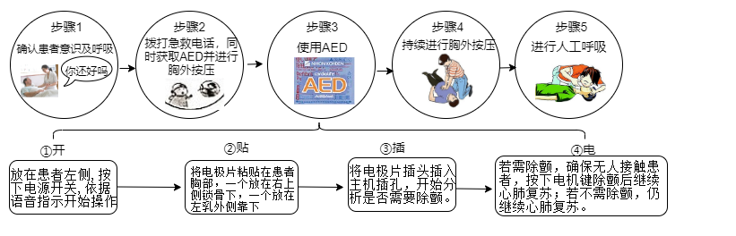
急救设备是挽救生命的利器，北京市计划到2022年底实现所有轨道交通车站AED设备全覆盖。每个人都了解急救知识并积极参与急救，才能织就更大的生命保护网。
（1）正常情况下，心室收缩时血液进入______（填血管类型），通过血液循环，为组织细胞运输充足的______和营养物质，供细胞利用。
（2）发生室颤时，心脏无法泵出足够的血液，脑部供血严重不足，导致位于______的呼吸中枢等基本生命活动中枢逐渐停止工作，危及人的生命。
（3）根据文中操作方法，使用AED时，两个电极片应分别贴在图所示的______（填序号） 位置。无论是否需要AED除颤，都需要对患者持续进行______。步骤5中在人工呼吸前要清除患者口腔异物，目的是______。
（4）认识与使用AED需要全社会的关注和参与。请提出一条帮助公众了解AED知识的可行建议：______。
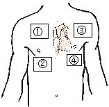
【答案】 ①. 动脉 ②. 氧气 ③. 脑干 ④. ①和④ ⑤. 心肺复苏 ⑥. 保持呼吸道畅通 ⑦. 制作宣传画或电子画报， 学校和社区发布
学校和社区发布
【解析】
【分析】（1）胸外心脏挤压：如果病人同时心跳停止，则应同时做人工胸外心脏挤压。一般每次人工呼吸，需要做4—5心脏挤压。
（2）血液循环分为体循环和肺循环两部分，即体循环是指血液由左心室进入主动脉，再流经全身的各级动脉、毛细血管网、各级静脉，最后汇集到上、下腔静脉，流回到右心房的循环；肺循环是指血液由右心室流入肺动脉，流经肺部的毛细血管网，再由肺静脉流回左心房的循环。可见体循环和肺循环组成一条完整的循环途径，为人体各个组织细胞不断的运来养料和氧，又不断地运走二氧化碳等废物。
【详解】（1）心脏有四个腔，这四个腔分别叫作左心房、左心室、右心房、右心室，左心房只和左心室相通，右心房只和右心室相通，左右心房和左右心室之间都是不相通的。心室的收缩把血液输送到动脉，而心房收缩只需把血液送入到心室，与各自的功能相适应，心室的壁比心房的壁厚。通过血液循环，为组织细胞运输氧气和营养物质，同时将细胞产生的代谢废物运走。
（2）脑干位于大脑的下方和小脑的前方，它的最下面与脊髓相连，脑干的灰质中含有一些调节人体基本生命活动的中枢，如心血管中枢、呼吸中枢等。所以发生室颤时，心脏无法泵出足够的血液，脑部供血严重不足，导致位于脑干的呼吸中枢等基本生命活动中枢逐渐停止工作，危及人的生命。
（3）依据急救操作和使用AED的流程可知：使用AED时，两个电极片应分别贴在图所示的①和④位置。无论是否需要AED除颤，都需要对患者持续进行心肺复苏。人工呼吸常用于抢救呼吸暂停的病人，做人工呼吸时，如果口腔内有泥土、血块等，必须先清除干净，使病人保持呼吸道的畅通，然后再进行口对口的吹气。
（4）为了帮助公众了解AED知识的可行建议：制作宣传画或电子画报，在学校和社区发布。（合理即可）
【点睛】解答此题的关键是掌握心脏的结构和功能、血管的类型以及血液循环途径。